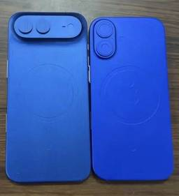

デイリーガジェット
https://daily-gadget.net/
デイリーガジェットは、スマホや海外発のユニークなガジェット、クラウドファンディングの注目アイテムまで幅広くレビュー。生活をもっと楽しく快適にする視点で、日常に驚きと便利さを届けるガジェット情報メディアです。
フィード

「Mangmi Air X Pro」が発表！Snapdragon 865と5000mAhバッテリー搭載の携帯型ゲーム機
デイリーガジェット
Mangmiが新しいレトロゲーム機のティザーを公開しました。2025年に発売された「Air X」の正当進化モデルとなる「Mangmi Air X Pro」は、「Retroid Pocket 6」をはじめとするコンパクトな...投稿 「Mangmi Air X Pro」が発表！Snapdragon 865と5000mAhバッテリー搭載の携帯型ゲーム機 は デイリーガジェット に最初に表示されました。関連記事:Retroid「Pocket Duo」が予約開始！120Hz有機EL2枚搭載の2画面Android機が10月中旬出荷へMangmiの「Air Y Pro」全スペック判明！4.2型500nitの4:3液晶にSnapdragon 865搭載、予約は7月30日開始かMANGMIが縦型ゲーム機「Air Y」「Air Y Pro」を発表！Qualcomm製チップとAndroidを搭載し、7月30日に予約開始か。
10分前

【AliExpress】「CMF Watch 3 Pro」がセールで約万円！録音機能＆GPS搭載の実力派
デイリーガジェット
11月19日0時からAliExpressで超大型セール「ブラックフライデーセール」が開催されています!! AliExpressにて、先月発売された「CMF Watch 3 Pro」が割引されるセールを実施しています。購入...投稿 【AliExpress】「CMF Watch 3 Pro」がセールで約万円！録音機能＆GPS搭載の実力派 は デイリーガジェット に最初に表示されました。関連記事:【AliExpress】牛乳パック型スピーカー「CMF by Nothing Speaker S」がセールで約1.3万円！前面パネルとノブを交換でき、IP68防水にも対応CMF by Nothing「Watch Pro 2」がAmazonセールで7,480円！1.32インチ有機EL・466×466で常時表示対応のスマートウォッチ「CMF Phone 2 Pro」グローバル版を実機レビュー！薄型・軽量で堅実スペックな個性派スマホ、しかも技適あり！
2時間前

【AliExpress】「POCO Pad C1」がセールで約万円！スナドラ6s 4G Gen 2搭載
デイリーガジェット
11月19日0時からAliExpressで超大型セール「ブラックフライデーセール」が開催されています!! AliExpressにて、先月発売された「POCO Pad C1」が割引されるセールを実施しています。購入画面でサ...投稿 【AliExpress】「POCO Pad C1」がセールで約万円！スナドラ6s 4G Gen 2搭載 は デイリーガジェット に最初に表示されました。関連記事:【AliExpress】「Blackview MEGA 12」がセールで約4.4万円！120Hz表示・256GB・Android 16の大画面機が高コスパ【AliExpress】「OnePlus 16」がセールで約15万円！Snapdragon 8 Elite Extreme Gen 6・185Hz・9,000mAh搭載の最上位機【AliExpress】「Lenovo Xiaoxin Pad Pro 12.7」がセールで約2.9万円！2.9K・144Hzの大画面液晶
3時間前

「Vivo S70」と「iQOO 16R」が登場へ！上位機譲りの64MP望遠と新Snapdragon 8搭載
デイリーガジェット
Vivoが次期ミドルレンジスマートフォン「Vivo S70」シリーズおよび「iQOO 16R」を、2027年の旧正月（春節）前に中国市場へ投入する見通しです。著名リーカーのDigital Chat Station氏がWe...投稿 「Vivo S70」と「iQOO 16R」が登場へ！上位機譲りの64MP望遠と新Snapdragon 8搭載 は デイリーガジェット に最初に表示されました。関連記事:vivo「X500 Ultra」の2027年春投入を著名リーカーが再リーク！Snapdragon最上位チップ搭載でカメラはPro Max超えの最上位機にVivo「X500」シリーズGSMA登録！Dimensity 9600×7000mAh×LOFIC搭載で2026年秋に登場へiQoo「15T」「Pad 6 Pro」が中国で発表！Dimensity 9500＋8,000mAhと13.2インチ4Kタブの新フラッグシップ
5時間前

「Titan 2 Elite」新色のティザー公開！物理キーボード搭載のコンパクトスマホ
デイリーガジェット
物理キーボードを搭載したコンパクトスマートフォンとして支持を集めるUnihertzの「Titan 2 Elite」に、新たなカラーバリエーションが追加される可能性が浮上しました。公式SNSでのティザー画像公開により、20...投稿 「Titan 2 Elite」新色のティザー公開！物理キーボード搭載のコンパクトスマホ は デイリーガジェット に最初に表示されました。関連記事:物理キーボード搭載の小型スマートフォン「Titan 2 Elite」が一般予約を開始！容量2倍や高性能カメラ搭載の上位モデルも登場。物理キーボード搭載「Unihertz Titan 2 Elite」の実機動画が公開！BlackBerry風デザインを採用しMWC 2026で正式展示へ「Headwolf Titan 1」を実機レビュー！AnTuTu 160万点越えで全部盛り、高コスパな小型タブレットで満足度高し！
6時間前

「iPhone Air 2」と「iPhone 18」のダミーが流出！薄型ボディの2眼化と最新カメラ配置が判明
デイリーガジェット
Appleが2027年春に投入を予定している次期スマートフォン「iPhone 18」と、薄型モデル「iPhone Air 2（別称：iPhone 18 Air）」のダミーモデル（モックアップ）画像が流出しました。著名リー...投稿 「iPhone Air 2」と「iPhone 18」のダミーが流出！薄型ボディの2眼化と最新カメラ配置が判明 は デイリーガジェット に最初に表示されました。関連記事:Apple「iPhone 18 / Air 2」の形状が判明！薄型機の2眼カメラ化とバッテリー20%増量iPhone18 Proは約15分で半分まで充電可能に！純正40Wアダプタ所有者は買い足し不要Mangmiの「Air Y Pro」全スペック判明！4.2型500nitの4:3液晶にSnapdragon 865搭載、予約は7月30日開始か
7時間前
【AliExpress】「Blackview MEGA 12」がセールで約4.4万円！120Hz表示・256GB・Android 16の大画面機が高コスパ
デイリーガジェット
11月19日0時からAliExpressで超大型セール「ブラックフライデーセール」が開催されています!! AliExpressにて、先月発売された「Blackview MEGA 12」が割引されるセールを実施しています。...投稿 【AliExpress】「Blackview MEGA 12」がセールで約4.4万円！120Hz表示・256GB・Android 16の大画面機が高コスパ は デイリーガジェット に最初に表示されました。関連記事:心拍計・歩数計を備えたレトロ風ウォッチ「Mega Man: My Play Watch」が登場！ロックマン2が腕で遊べる完全オフライン仕様で79.99ドルBlackview MEGA 12のスペック解説！Dimensity 7200搭載でIP69K防水防塵の12.2型5Gタブレット「Blackview ZENO 1」を実機レビュー！スタンド搭載で付属品が充実している高コスパな8インチタブレット!
11時間前
【AliExpress】「OPPO Find X10」がセールで約12.7万円！2億画素カメラ2基と8000mAhを6.59型に収めたスマホ
デイリーガジェット
11月19日0時からAliExpressで超大型セール「ブラックフライデーセール」が開催されています!! AliExpressにて、「OPPO Find X10」が大幅割引されるセールを実施しています。購入画面でサイト内...投稿 【AliExpress】「OPPO Find X10」がセールで約12.7万円！2億画素カメラ2基と8000mAhを6.59型に収めたスマホ は デイリーガジェット に最初に表示されました。関連記事:【AliExpress】「OnePlus 16」がセールで約15万円！Snapdragon 8 Elite Extreme Gen 6・185Hz・9,000mAh搭載の最上位機「Oppo Find X10 Ultra」の仕様判明！初のDimensity、2億画素カメラ搭載の最上位スマホHONORから9.7インチの小型タブレット「Tablet X10 Mini」が登場！2K画面と8000mAhバッテリーを搭載
20時間前
【AliExpress】「OnePlus 16」がセールで約15万円！Snapdragon 8 Elite Extreme Gen 6・185Hz・9,000mAh搭載の最上位機
デイリーガジェット
11月19日0時からAliExpressで超大型セール「ブラックフライデーセール」が開催されています!! AliExpressにて、先月発売された「OnePlus 16」が割引されるセールを実施しています。購入画面でサイ...投稿 【AliExpress】「OnePlus 16」がセールで約15万円！Snapdragon 8 Elite Extreme Gen 6・185Hz・9,000mAh搭載の最上位機 は デイリーガジェット に最初に表示されました。関連記事:AliExpressで「ブラックフライデー」が開催！使えるクーポン・注目イヤホン・ヘッドフォンの情報をまとめて紹介AliExpressで「ブラックフライデー」が開催！使えるクーポン・注目タブレットの情報をまとめて紹介AliExpressで「ブラックフライデー」が開催！使えるクーポン・注目スマホの情報をまとめて紹介
21時間前
【実機レビュー】背面ディスプレイ搭載の新型「Xiaomi 18 Pro シリーズ」をハンズオン！気になる新機能や設定手順も徹底解説
デイリーガジェット
11月17日にグローバルおよび日本での発表が行われ、同日22時より予約販売が開始されたシャオミの最新フラッグシップスマートフォン「Xiaomi 18 Pro シリーズ」。 遊び心と実用性を兼ね備えた「背面ディスプレイ」を...投稿 【実機レビュー】背面ディスプレイ搭載の新型「Xiaomi 18 Pro シリーズ」をハンズオン！気になる新機能や設定手順も徹底解説 は デイリーガジェット に最初に表示されました。関連記事:「Xiaomi 17 Ultra」レビュー！お任せ設定でプロ級の写真が量産できる、秋の行楽シーズンに適した一台「Xiaomi Pad 7」を実機レビュー！Snapdragon 7+ Gen 3搭載で高精細ディスプレイを持つ高コスパなタブレット！10万円ちょっとでライカカメラ搭載の爆速ハイエンド！Xiaomi 14T Proレビュー
1日前